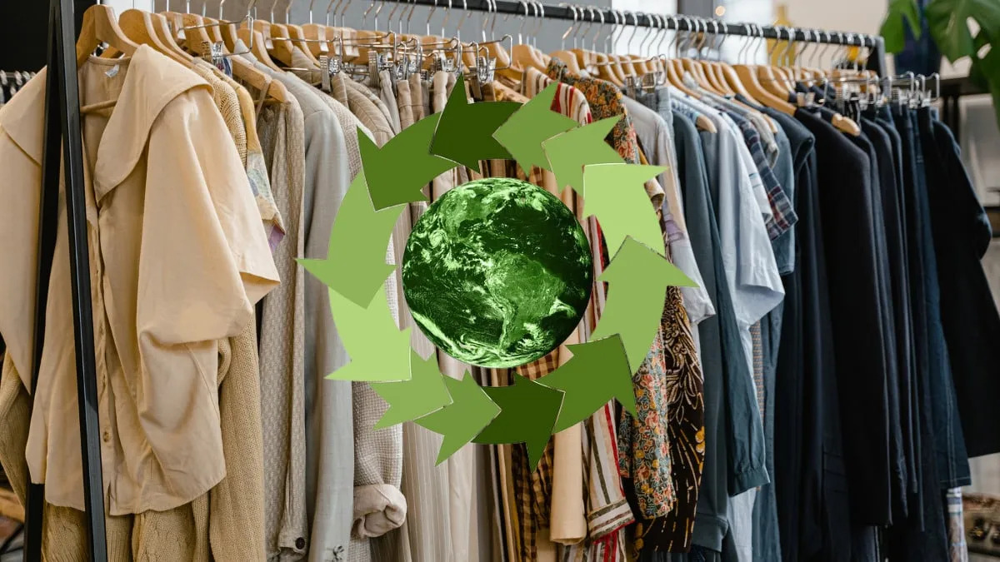

Sobre Nuestro Proyecto
"Vístete con Conciencia" es una iniciativa de la Universidad Tecnológica La Salle de León, Nicaragua que busca crear conciencia sobre la importancia de la moda sostenible y proporcionar alternativas prácticas para que nuestra comunidad universitaria y la población en general puedan vestir de manera más responsable con el medio ambiente.

Este proyecto no solo busca informar sobre las consecuencias de la moda rápida, sino también empoderar a las personas con herramientas prácticas para adoptar hábitos de consumo más conscientes. A través de actividades educativas, espacios de intercambio y una plataforma digital interactiva, promovemos un cambio cultural hacia una moda ética, circular y respetuosa con nuestro planeta.

“Vístete con Conciencia” creemos que pequeños cambios en nuestras decisiones de compra pueden generar un gran impacto colectivo, contribuyendo a la reducción de residuos textiles, al fortalecimiento de la economía local y a la construcción de una sociedad más comprometida con la sostenibilidad.
Nuestros Objetivos
Educar
Informar sobre los impactos negativos del fast fashion y las alternativas sostenibles disponibles.
Conectar
Crear una red de lugares locales que promuevan la moda sostenible y el comercio responsable.
Transformar
Impulsar un cambio positivo en los hábitos de consumo de moda de nuestra comunidad.
¿Cómo lo Hacemos?
Investigación y Mapeo
Identificamos y documentamos lugares locales que ofrecen alternativas sostenibles de moda.
Plataforma Digital
Creamos un espacio digital accesible con recursos, consejos y un mapa interactivo.
Impacto Esperado
Personas alcanzadas en el primer año
Lugares sostenibles mapeados
Reducción estimada en compras de fast fashion
Artículos Recomendados
Nicaragua Diseña inaugura tienda de moda sostenible
Un paso importante para promover el consumo responsable en Nicaragua a través de alianzas con diseñadores y marcas locales.
¿Es posible vestir sostenible de pies a cabeza?
Consejos y reflexiones sobre cómo adoptar un estilo de vida más consciente a través de la moda sostenible.

Nicaragua Diseña participa en la Semana de la Moda en Guatemala
Una vitrina internacional para el talento nicaragüense, destacando propuestas creativas con enfoque sostenible.
Modelos de negocio en el sector de la moda sostenible
Un análisis sobre cómo las marcas están reinventando sus estrategias para alinearse con valores éticos y ecológicos.
Un giro hacia la sostenibilidad: alternativas al fast fashion
Iniciativas y marcas que apuestan por una moda consciente, duradera y respetuosa con el planeta.
¡Únete al Cambio!
Descubre el mapa verde y sumérgete en el mundo de la moda sostenible. Explora las tiendas seleccionadas, conoce sus propuestas responsables y déjate inspirar por iniciativas que transforman la forma en que consumimos. Cada visita es una oportunidad para conectar con marcas comprometidas y tomar decisiones más conscientes.